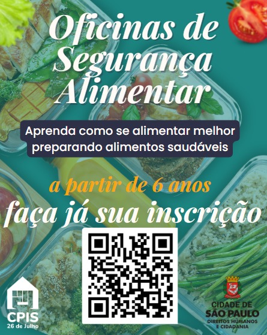

PROJETOS
Venha ver nossos Projetos!174 Uh - Projeto São Lucas A
164 Uh - Projeto São Lucas B
66 Uh - Luiz Gama, 500
140 Uh - Luiz Gama, 554
Telecentros São equipamentos públicos da Secretaria Municipal de Inovação e Tecnologia que contribuem para promover o desenvolvimento humano, econômico e social por meio do uso da linguagem digital como elemento básico para o exercício da cidadania.
Grupo da Pessoa Idosa
Começar de Novo 60+
Termo de Fomento Nº. TFM/131/2023/SMDHC/CPPI
O serviço tem a perspectiva de trazer à convivência para a pessoa idosa, fortalecendo as relações entre diferentes pessoas de forma harmoniosa e respeitosa. O convívio e a interação entre as pessoas favorecem a troca de experiências, promovem a valorização cultural, o desenvolvimento de sociabilidades, reforçando a cidadania e a igualdade social.
Atendimentos e atividades:
terça, quinta e sábado das 9h ás 12h
Segurança Alimentar
Promover a segurança alimentar e a inclusão social por meio de capacitações em educação alimentar e técnicas culinárias, visando melhorar a qualidade da alimentação, reduzir o desperdício, fortalecer a autonomia e a dignidade dos participantes, além de fomentar hábitos saudáveis e sustentáveis que contribuam para o desenvolvimento humano e comunitário.
Incrições no link abaixo
ATENDIMENTO APENAS COM AGENDAMENTO ANTECIPADO
- Cálculo de tempo de contribuição
- Entrada em Aposentadoria por tempo de serviço;
- Entrada em aposentadoria por idade;
- LOAS/BPC;
- Regularização e declaração do MEI;
- Orientação para Auxilios do governo;
- Redefinição de senha gov.br;
- Entre outros;
CLIQUE NO QUADRO ABAIXO PARA AGENDAR
OU PELO TELEFONE 11-2015-9493